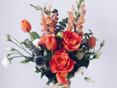
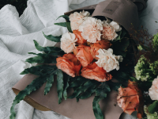

25-60-60")
Букеты на заказ
У каждого особенного момента есть своя история, и букет, созданный на заказ, может стать её уникальным воплощением. В Julia's Flowers мы предлагаем услугу индивидуального составления букета, чтобы он идеально отражал ваши эмоции и настроение. Мы понимаем, что каждый момент в жизни уникален, и потому уделяем внимание каждой детали, чтобы ваш букет был не просто красивым, но и нес в себе частичку вашей индивидуальности. Выберите любимые цветы, цвета и стиль, а наши флористы превратят ваши идеи в настоящий шедевр.
Варианты упаковки букетов 
Мы учитываем ваши пожелания и требования, будь то строгие классификации цветов для делового мероприятия или яркие оттенки для праздничного события. Каждое заказное создание будет продумано до мелочей: от выбранных цветов до формы композиции и упаковки. Мы стараемся сделать так, чтобы ваш букет стал не только подарком, но и выразителем вашей души, ваших самых искренних чувств.
Упаковка букетаТоп 3 варианта упаковки круглого букета
Наши букеты на заказ подходят для любого случая: дни рождения, годовщины, свадьбы, романтические встречи или просто желание порадовать близкого человека без повода. Будь то юбилей или предложение руки и сердца — мы готовы помочь вам создать композицию, которая станет неотъемлемой частью незабываемого момента.
Мы также учитываем ваши пожелания по упаковке и оформлению, предлагая современные, экологичные или традиционные варианты. Для любителей минимализма подойдут элегантные и сдержанные упаковки, для романтиков — нежные и воздушные, а для тех, кто ценит стильные акценты, мы предложим упаковку в стиле ретро или хай-тек. Каждый букет станет гармоничным и завершённым, сочетая не только цветы, но и атмосферу вашего события.
Ваш букет будет не просто подарком, а истинным символом вашего отношения, будь то для любимого человека, друга или коллеги. Мы также предлагаем букеты для корпоративных мероприятий, торжеств и тематических вечеринок, где особое внимание уделяется созданию необычного оформления, которое выделит вашу композицию среди других.
Мы заботимся о каждой детали и гарантируем, что ваш букет на заказ будет выглядеть безупречно. При необходимости мы также предлагаем доставку на указанное время и адрес, чтобы ваше цветочное послание достигло получателя в наилучшем виде.
Позвольте нам помочь вам выразить самые искренние чувства с помощью букета на заказ от Julia's Flowers. Сделайте каждый момент особенным и незабываемым.
Перейти на главную страницу